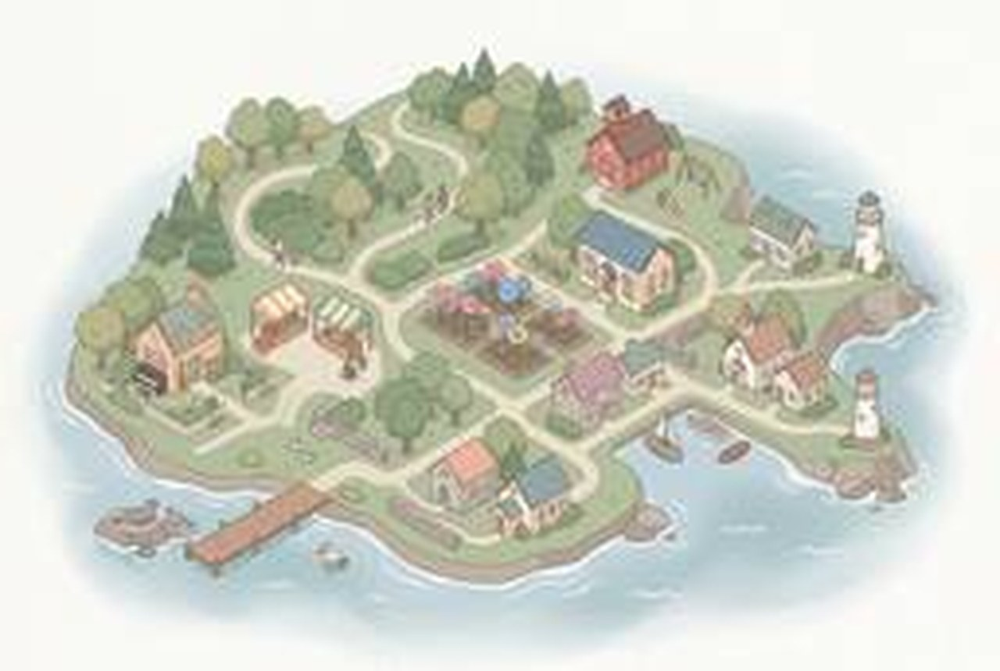

Line puzzle
Draw a line from the circle to the exit, through every dot. Solving a panel powers the next one and changes the palette.
Drag from the circle
- Taken from The Witness
- Start circle, rounded exit, no crossing your own path. Hexagon dots must be passed. Cables carry power to the next panel. Releasing early cancels.
- On the site
- One small panel on Home. Each solve shifts the fog palette (Fog → Dusk → Night). Never blocks content.
- Later
- Environmental panel: a path hidden in a profile photograph that only lines up when the cursor is in one spot.
- Build with
- Canvas 2D + the existing fog shader for the palette swap. Keyboard: arrows trace the path.
Soft town
An illustrated town is the index. Hover a place to learn what lives there.

Hover a place- Seven places
- Garden, pier, market, schoolhouse, library, piano cottage, lighthouse. Each maps to a page.
- Motion
- The view eases toward the place you hover. Small animals idle near the pier (seals, a pelican).
- Image
- Generated in Figma (gemini-3.1-flash-image). This is the 256px preview upscaled; the full-size file is in your Figma drafts.
- Build with
- Layered PNGs with CSS transforms, or Rive for idle animal loops.
Bike ride
Scroll sideways to ride through town. At each stop a sign rises with a project.
Scroll or drag sideways
- Stops
- Market stall (Chorvivo), finish banner (Wayfarer), schoolyard (Glenergy), library (three papers), café with a piano (profile), post box (contact).
- Motion
- Wheels turn with distance. Three parallax layers. The bike slows near a stop and settles on it when you let go.
- Risk
- Horizontal scroll is unfamiliar on desktop. Keep the four buttons fixed so nobody is trapped.
- Build with
- GSAP ScrollTrigger (horizontal pin) or PixiJS for the scene.
Story
One sentence at a time. A single line drawing builds as you scroll, chapter by chapter.
- Chapters
- A question → Listening (research) → Making (design) → Testing → Off the clock → Write to me.
- Motion
- Stroke draw tied to scroll. Text swaps at chapter edges. Nothing moves unless you scroll.
- On the site
- Replaces Home. The four buttons stay visible for readers who want to skip.
- Build with
- SVG stroke-dashoffset + GSAP ScrollTrigger, or Lottie from your own drawings.
Affinity board
Research as you'd actually do it. Drag sticky notes into groups; a group that makes sense becomes a paper.
Group the notes
- Rule
- Three notes from the same study placed close together form a cluster. The cluster is labelled with the paper title and opens it.
- Why it fits
- Shows method, not just output. A researcher sorting evidence is the story.
- On the site
- The Research page header. A "Sort for me" button groups them instantly.
- Build with
- Plain pointer events, or Matter.js for a little weight and settle.
Darkroom
Case studies develop like prints. Move over the tray to agitate it and the image comes up.
Agitate the tray
- Rule
- Pointer movement adds development. A print is never lost; it only gets darker. Fully developed, it is fixed and opens.
- Why it fits
- Photography is yours; patience is rewarded, which matches the fog.
- Variant
- Red safelight mode: the whole page goes red-on-black while a print is in the tray.
- Build with
- One fragment shader (threshold + grain) on each cover image.
Piano roll
The work as a short score. Each project is a note; hovering plays it and scrolling plays the phrase.
Sound is off
- Phrases
- Design in major (C E G), research in minor (A C E), profile a high D, contact a held G.
- Motion
- A playhead tied to scroll. Notes swell when played. Silent until you turn sound on.
- Why it fits
- Jazz piano and game audio are part of you; this puts them at the front door.
- Build with
- Tone.js (or Web Audio) + Canvas. Your recorded piano could replace the synth.